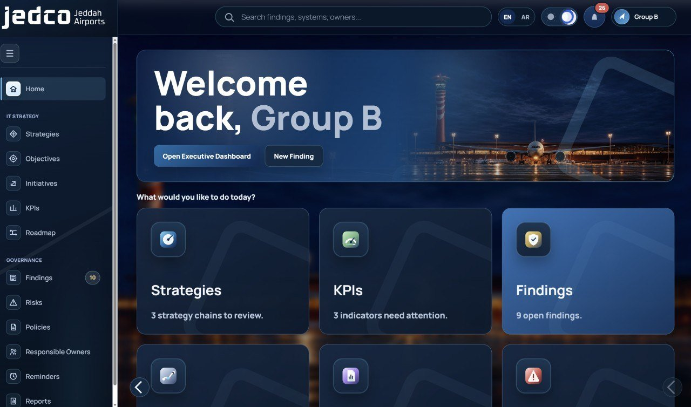

JEDCO co-op
My Experience
My summer co-op training at Jeddah Airports Company (JEDCO), in the Digital & Technology sector.
Boarding pass · IT co-op
KAUKing Abdulaziz University
JEDJEDCO · Digital & Technology
- PassengerYarin Aldaheri
- RoleIT Co-op Trainee
- Dates12 Jul - 27 Aug 2026
- Hours200+
6 weeks
4 projects
My route
Week by week
Core Systems
I learned how the passenger journey works and how the main airport systems share data with each other.
Strategy & Governance
How business needs become IT goals and KPIs. I planned an IT initiative and prioritised IT projects.
User Support
I designed a service request workflow with HTML forms and prepared laptops for new employees.
Power BI & Power Automate
I cleaned data with Power Query, wrote DAX measures and made an automated HTML email.
Project Management
The IT project lifecycle and how vendors are chosen and followed up.
Network & Cybersecurity
Routers, switches, VLANs, DNS, the CIA triad and how risk is measured.
Hands-on
What I built

IT Strategy & Governance Platform
We built it as a team (Group B). The IT Governance team can follow strategies, objectives, KPIs and the roadmap, and track findings, risks and owners in one place.
IT Service Request Workflow
I designed the full journey of an IT service request, from the moment the employee sends it until it is closed. I drew the workflow with all the steps: submit, manager approval, assign to IT support, fix the issue and close. Then I made simple HTML forms for the requests so the employee fills in the needed information from the start.
Sales & Budget Dashboard
I built an interactive Power BI dashboard that compares the actual sales with the budget. I cleaned and prepared the data with Power Query, wrote DAX measures like total sales, budget variance and YoY %, and added KPI cards, charts and filters by year and country, so the results are easy to read and understand.
New-Employee Email
I designed an HTML welcome email for new employees and connected it to a Power Automate workflow. After the approval steps are done, the email is sent automatically with the first steps the employee needs, like logging in and contacting IT support. This turned a manual task into an automatic one.
In my luggage
Skills I gained
Technical
Professional
Turbulence
Challenges & solutions
Device setup
Many steps: installing Windows, updates and programs.
I followed the steps one by one on every device.
Service requests
Understanding how a request moves from one step to another.
I drew the workflow to see every step clearly.
Power BI
Cleaning the data and writing the DAX measures correctly.
I built the dashboard step by step and checked the totals.
Power Automate
Learning triggers, actions and approvals.
I tested a lot until the email workflow worked.
Thank you, JEDCO!
Thank you to the Digital & Technology team for their help, and to my university for this opportunity. It was a great experience.